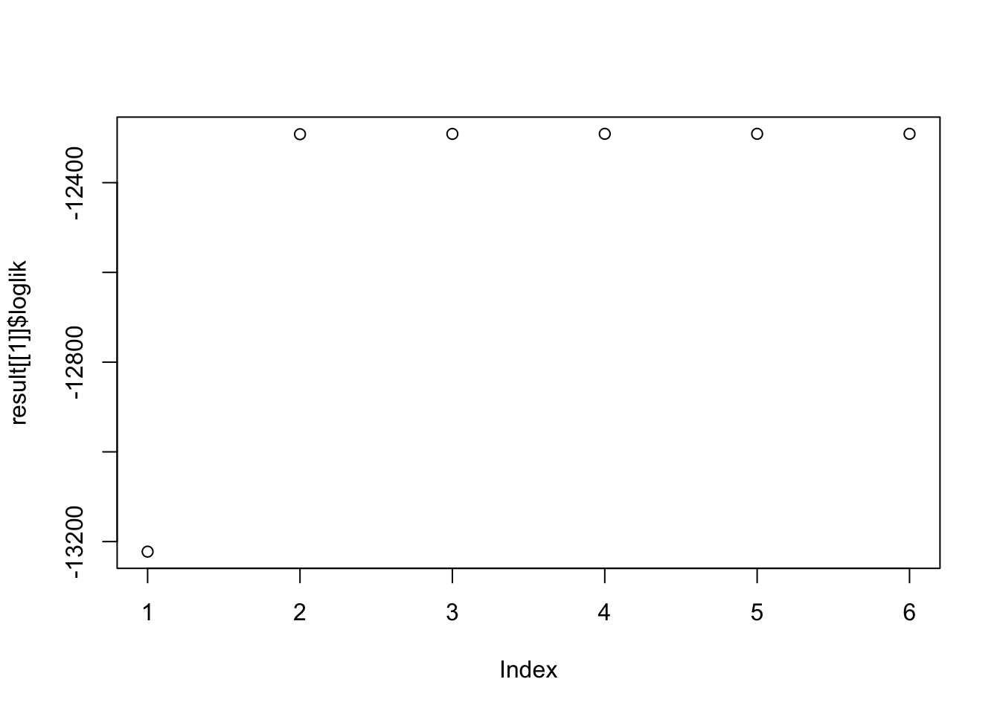

\[ \left(\begin{matrix} \hat{x} \\ \hat{y} \end{matrix} \right) | \left(\begin{matrix} x \\ y \end{matrix} \right) \sim N(\left(\begin{matrix} \hat{x} \\ \hat{y} \end{matrix} \right) ; \left(\begin{matrix} x \\ y \end{matrix} \right), \left( \begin{matrix} 1 & \rho \\ \rho & 1 \end{matrix} \right)) \] \[ \left(\begin{matrix} x \\ y \end{matrix} \right) \sim \sum_{k=0}^{K} \pi_{k} N( \left(\begin{matrix} x \\ y \end{matrix} \right); 0, U_{k} ) \] \(\Rightarrow\) \[ \left(\begin{matrix} \hat{x} \\ \hat{y} \end{matrix} \right) \sim \sum_{k=0}^{K} \pi_{k} N( \left(\begin{matrix} \hat{x} \\ \hat{y} \end{matrix} \right); 0, \left( \begin{matrix} 1 & \rho \\ \rho & 1 \end{matrix} \right) + U_{k} ) \] \[ \Sigma_{k} = \left( \begin{matrix} 1 & \rho \\ \rho & 1 \end{matrix} \right) + U_{k} = \left( \begin{matrix} 1 & \rho \\ \rho & 1 \end{matrix} \right) + \left( \begin{matrix} u_{k11} & u_{k12} \\ u_{k21} & u_{k22} \end{matrix} \right) = \left( \begin{matrix} 1+u_{k11} & \rho+u_{k12} \\ \rho+u_{k21} & 1+u_{k22} \end{matrix} \right) \] Let \(\sigma_{k11} = \sqrt{1+u_{k11}}\), \(\sigma_{k22} = \sqrt{1+u_{k22}}\), \(\phi_{k}=\frac{\rho+u_{k12}}{\sigma_{k11}\sigma_{k22}}\)
library(mashr)Loading required package: ashrset.seed(1)
n <- 10000; pi <- c(0.8,0.2); rho <- 0.8
V <- matrix(c(1,rho,rho,1),2,2)
U0 <- matrix(0,2,2)
U1 <- diag(2)
X0 <- mvtnorm::rmvnorm(n*pi[1], sigma = V + U0)
X1 <- mvtnorm::rmvnorm(n*pi[2], sigma = V + U1)
X <- rbind(X0,X1)
U2 <- matrix(1,2,2)
U3 <- matrix(0,2,2); U3[1,1] <- 1
U4 <- matrix(0,2,2); U4[2,2] <- 1
Ulist <- list(U0 = U0, U1 = U1, U2=U2, U3 = U3, U4=U4)The loglikelihood is (with penalty) \[ l(\rho, \pi) = \sum_{i=1}^{n} \log \sum_{k=0}^{K} \pi_{k}N(x_{i}; 0, \Sigma_{k}) + \sum_{k=0}^{K} (\lambda_{k}-1) \log \pi_{k} \]
The penalty on \(\pi\) encourages over-estimation of \(\pi_{0}\), \(\lambda_{k}\geq 1\).
\[ l(\rho, \pi) = \sum_{i=1}^{n} \log \sum_{k=0}^{K} \pi_{k}\frac{1}{2\pi\sigma_{k11}\sigma_{k22}\sqrt{1-\phi_{k}^2}} \exp\left( -\frac{1}{2(1-\phi_{k}^2)}\left[ \frac{x_{i}^2}{\sigma_{k11}^2} + \frac{y_{i}^2}{\sigma_{k22}^2} - \frac{2\phi_{k}x_{i}y_{i}}{\sigma_{k11}\sigma_{k22}}\right] \right) + \sum_{k=0}^{K} (\lambda_{k}-1) \log \pi_{k} \]
Algorithm:
Input: X, init_pi, init_rho, Ulist
Compute loglikelihood
delta = 1
while delta > 10^(-5)
Given rho, estimate pi by max loglikelihood
Given pi, estimate rho by max loglikelihood
Compute loglikelihood
Update deltaget_sigma <- function(rho, Ulist){
V <- matrix(c(1,rho,rho,1), 2,2)
lapply(Ulist, function(U) U + V)
}
penalty <- function(prior){
subset <- (prior != 1.0)
sum((prior-1)[subset]*log(pi[subset]))
}
compute.log.lik <- function(L, p, prior){
pi = normalize(pmax(0,pi))
L <- t(t(L) * p)
return(sum(log(rowSums(L))) + penalty(prior))
}
normalize <- function(x){
x/sum(x)
}
optimize_pi_rho_times <- function(X, Ulist, init_pi=NULL, init_rho=0, tol=1e-5, prior=c("nullbiased", "uniform"), optmethod = c("mixIP","mixEM","cxxMixSquarem")){
times = length(init_rho)
result = list()
for(i in 1:times){
result[[i]] = optimize_pi_rho(X, Ulist, init_pi=NULL, init_rho=init_rho[i], tol=1e-5, prior=c("nullbiased", "uniform"), optmethod = c("mixIP","mixEM","cxxMixSquarem"))
}
return(result)
}
optimize_pi_rho <- function(X, Ulist, init_pi=NULL, init_rho=0, tol=1e-5, prior=c("nullbiased", "uniform"), optmethod = c("mixIP","mixEM","cxxMixSquarem")){
optmethod <- match.arg(optmethod)
prior <- match.arg(prior)
if(length(Ulist) <= 1){
stop('Please provide more U! With only one U, the correlation could be estimated directly using mle.')
}
prior <- mashr:::set_prior(length(Ulist), prior)
if(is.null(init_pi)){
init_pi <- normalize(prior)
}
Sigma <- get_sigma(init_rho, Ulist)
L <- t(plyr::laply(Sigma,function(U){mvtnorm::dmvnorm(x=X,sigma=U)}))
log_liks <- c()
ll <- compute.log.lik(L, init_pi, prior)
log_liks <- c(log_liks, ll)
delta.ll <- 1
iter <- 0
rho_s <- init_rho
while( delta.ll > tol){
# max pi
pi_s <- mashr:::optimize_pi(L,prior=prior,optmethod=optmethod)
# max_rho
rho_s <- optim(rho_s, optimize_rho, lower = -1, upper = 1, X = X, Ulist=Ulist, pi_s = pi_s, prior = prior, method = 'Brent')$par
# compute loglike
Sigma <- get_sigma(rho_s, Ulist)
L <- t(plyr::laply(Sigma,function(U){mvtnorm::dmvnorm(x=X,sigma=U)}))
ll <- compute.log.lik(L, pi_s, prior)
log_liks <- c(log_liks, ll)
# Update delta
delta.ll <- log_liks[length(log_liks)] - log_liks[length(log_liks)-1]
iter <- iter + 1
}
return(list(pi = pi_s, rho=rho_s, loglik = log_liks, iter = iter))
}
optimize_rho <- function(rho, X, Ulist, pi_s, prior){
Sigma <- get_sigma(rho, Ulist)
L <- t(plyr::laply(Sigma,function(U){mvtnorm::dmvnorm(x=X,sigma=U)}))
-compute.log.lik(L, pi_s, prior)
}result <- optimize_pi_rho_times(X, Ulist)
plot(result[[1]]$loglik) The estimated \(\rho\) is 0.7998163.
\[ P(X,Z|\rho, \pi) = \prod_{i=1}^{n} \prod_{k=0}^{K}\left[\pi_{k}N(x_{i}; 0, \Sigma_{k})\right]^{\mathbb{I}(z_{i}=k)} \prod_{k=0}^{K}\pi_{k}^{\lambda_{k}-1} \] \[ \mathbb{E}_{Z|X} \log P(X,Z|\rho, \pi) = \sum_{i=1}^{n} \sum_{k=0}^{K} P(z_{i}=k|X)\left[ \log \pi_{k} + \log N(x_{i}; 0, \Sigma_{k})\right] + \sum_{k=0}^{K} (\lambda_{k}-1)\log \pi_{k} \] \[ \gamma_{Z_{i}}(k) = P(z_{i}=k|X_{i}) = \frac{\pi_{k}N(x_{i}; 0, \Sigma_{k})}{\sum_{k'=0}^{K}\pi_{k'}N(x_{i}; 0, \Sigma_{k'})} \]
\(\pi\): \[ \sum_{i=1}^{n} \gamma_{Z_{i}}(k) \frac{1}{\pi_{k}} + \frac{\lambda_{k}-1}{\pi_{k}} - \lambda = 0 \quad \rightarrow \pi_{k} = \frac{1}{\lambda} \left(\sum_{i=1}^{n} \gamma_{Z_{i}}(k) + \lambda_{k}-1\right) \quad \lambda = n + \sum_{k=1}^{K}\lambda_{k} - K \]
\[ \hat{\pi}_{k} = \frac{\sum_{i=1}^{n} \gamma_{Z_{i}}(k) + \lambda_{k} - 1 }{n + \sum_{k=1}^{K}\lambda_{k} - K } \]
\(\rho\): \[ \begin{align*} f(\rho) &= \sum_{i=1}^{n} \sum_{k=1}^{K} \gamma_{Z_{i}}(k)\left[ -\frac{1}{2}\log (1-\phi_{k}^2)-\frac{1}{2(1-\phi_{k}^2)}\left[ \frac{x_{i}^2}{\sigma_{k11}^2} + \frac{y_{i}^2}{\sigma_{k22}^2} - \frac{2\phi_{k}x_{i}y_{i}}{\sigma_{k11}\sigma_{k22}}\right] \right]\\ f(\rho)' &= \sum_{i=1}^{n} \sum_{k=1}^{K} \gamma_{Z_{i}}(k)\left[ \frac{\phi_{k}}{1-\phi_{k}^2}-\frac{\phi_{k}}{(1-\phi_{k}^2)^2}\left[ \frac{x_{i}^2}{\sigma_{k11}^2} + \frac{y_{i}^2}{\sigma_{k22}^2}\right] - \frac{\phi_{k}+1}{(1-\phi_{k}^2)^2}\frac{x_{i}y_{i}}{\sigma_{k11}\sigma_{k22}}\right]\frac{1}{\sigma_{k11}\sigma_{k22}} = 0 \end{align*} \] \(\phi_k = \frac{\rho + u_{k12}}{\sigma_{k11}\sigma_{k22}}\), \(\phi_{k}\) is a function of \(\rho\).
Algorithm:
Input: X, Ulist, init_rho, init_pi
Compute loglikelihood
delta = 1
while delta > tol
E step: update Z
M step: update pi, update rho
Compute loglikelihood
Update deltamixture.EM <- function(X, Ulist, init_rho=0, init_pi = NULL, iter=50) {
prior <- mashr:::set_prior(length(Ulist), 'nullbiased')
if (is.null(init_pi)){
init_pi <- normalize(prior)
}
log_liks <- c()
Sigma <- get_sigma(init_rho, Ulist)
L <- t(plyr::laply(Sigma,function(U){mvtnorm::dmvnorm(x=X,sigma=U)}))
ll <- compute.log.lik(L, init_pi, prior)
log_liks <- c(log_liks, ll)
delta.ll <- 1
para = list(rho = init_rho, pi = init_pi)
for(i in 1:iter){
para <- EM.iter(para, L, X, Ulist)
Sigma = get_sigma(para$rho, Ulist)
L <- t(plyr::laply(Sigma,function(U){mvtnorm::dmvnorm(x=X,sigma=U)}))
ll <- compute.log.lik(L, para$pi, prior)
log_liks <- c(log_liks, ll)
delta.ll <- log_liks[length(log_liks)] - log_liks[length(log_liks)-1]
}
return(list(estimate = para, loglikelihood = log_liks))
}
EM.iter <- function(para, L, X, Ulist, ...) {
# E-step: compute E_{Z|X,w0}[I(Z_i = k)]
z_ik <- L
for(k in seq_len(ncol(L))) {
z_ik[,k] <- para$pi[k]*z_ik[,k]
}
z_ik <- z_ik / rowSums(z_ik)
# M-step
pi.next <- colSums(z_ik)/sum(z_ik)
rho.next = optimize(EMloglikelihood, interval = c(-1,1), maximum = TRUE, X = X, Ulist = Ulist, z = z_ik)$maximum
rho.seq = seq(-0.99,0.99,by=0.01)
ll.seq = numeric(length(rho.seq))
for(i in 1:length(rho.seq)){
ll.seq[i] = EMloglikelihood(rho.seq[i], X, Ulist, z_ik)
}
plot(rho.seq, ll.seq, type = 'l')
print(rho.seq[which.max(ll.seq)])
print(rho.next)
nex = list(pi = pi.next, rho = rho.next)
return(nex)
}
EMloglikelihood = function(rho, X, Ulist, z){
Sigma = get_sigma(rho, Ulist)
L = t(plyr::laply(Sigma,function(U){mvtnorm::dmvnorm(x=X,sigma=U, log=TRUE)}))
sum(L * z)
}# result.em = mixture.EM(X, Ulist, iter=20)This R Markdown site was created with workflowr